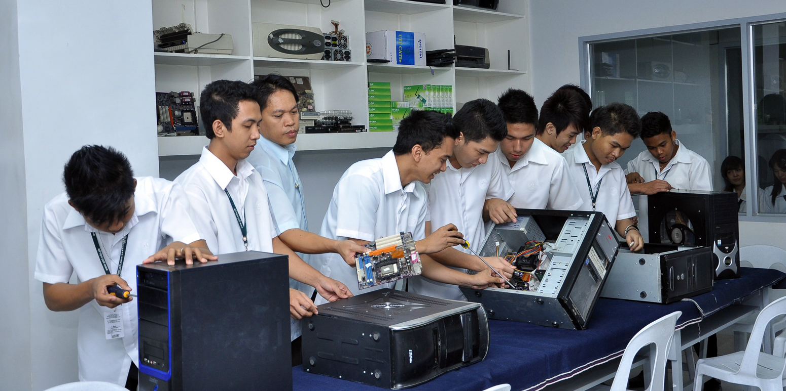

Rosales National High SchoolRosales National High School
Rosales National High SchoolRosales National High SchoolHome About Faculties Academic Tracks TVL Tracks Events Log out
|  |
|---|
The Information Communication and Technology (ICT) Strand is one of the strands offered under Technical-Vocational Livelihood (TVL) Track of K-12 curriculum. ICT strand subjects seek to teach students concepts and skills in information technology. Under ICT curriculum, students will learn how to write programs and design websites. This will also help them hone their skills in animation and illustration which will help them thrive in the creative field. Aside from these, ICT strand will also cover telecom installation and medical transcription.
* Bachelor of Science in Computer Science (BS CS).
* Bachelor of Science in Information Technology (BS IT).
* Bachelor of Science in Computer Engineering (BS CE).
* Bachelor of Science in Information Science (BS IS).
all credits goes to bukas.ph
* Computer Programmers
* Web Designers
* Database Analysts
* Project Managers
* Social Media Managers
* Social Community Managers
* Security/Networking Analysts
* Technology Support
* Mobile Application Developers
* Technical Trainers/Managers
* e-Marketing Specialists
* Digital Specialists
* Public Relations/Content Marketing
* Web Development Specialists
* Social Media & Marketing Coordinators
* Integrated Marketing Strategists
* Corporate Communications Coordinators
* Online Engagement Specialists